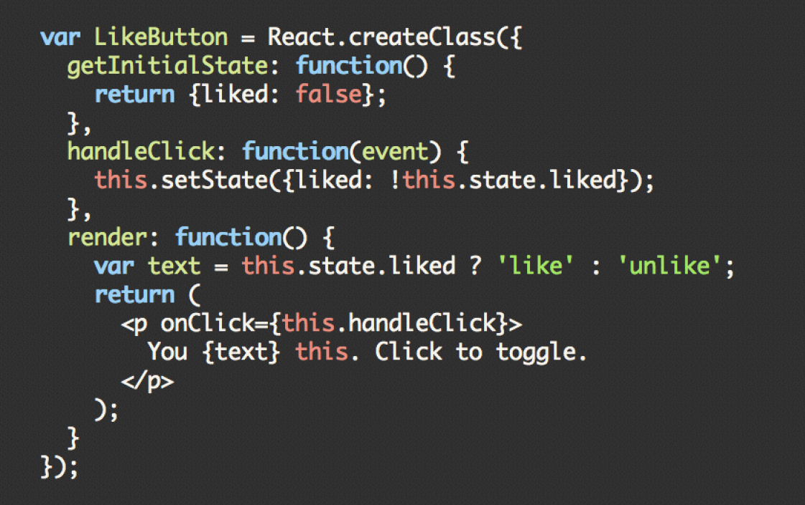

React为什么这么火
http://www.dang-jian.com/
党建
议程:
- React的发展历史
- React的设计理念
- React的主要特色
- React目前存在的问题
关于我：党建
www.dang-jian.com
- 2000年~2007年：西安电子科技大学，硕士学历，人工智能。
- 2007年~2014年：葡萄城信息技术有限公司，程序员，架构师。
- 2014年~今：西安瑞木信息技术有限公司，架构师，合伙人，负责公司技术培训，团队建设。
- dangjian@github
- dangjian@weibo
- hunterdang@gmail.com
送书

React是什么？

- Facebook开发的一个用于构建UI的JS库，不是框架
- React不是一个MVC框架，可以看作为MVC里面的“V”

React的发展历史
- 来自于facebook内部的一个广告系统
- Instagram使用了React构建其前端架构
- 2013年5月对外发布
- 2015年3月发布React Native
- 目前（2015年5月）的版本正式版本0.13.3
React的设计
- 编写简单直观的代码
- 简化可复用的组件
- 使用JSX直观的定义用户界面
- 虚拟DOM
- 单向数据流动：Flux
虚拟DOM
- 原生DOM操作，性能是个关注点
- 虚拟DOM是React重新实现的一套DOM模型
- 保留了元素的层级关系和少量的属性
- 性能比原生DOM操作高很多
虚拟DOM和原生DOM使用对比
使用原生DOM生成元素
var a = document.createElement('a')
a.setAttribute('class', 'link')
a.setAttribute('href', 'https://github.com/facebook/react')
a.appendChild(document.createTextNode('React'))
使用虚拟DOM生成元素
var a = React.createElement('a', {
className: 'link',
href: 'https://github.com/facebook/react'
}, 'React')
虚拟DOM在React中的应用
- 不同的数据展现不同的UI,当数据变化时，React会重新构建整个DOM树
- 将当前的DOM树和之前的比较，仅仅把变化的部分反映到实际的浏览器UI更新上
- 可以在服务器端完成HTML结构的构建
单向数据流动：Flux
https://facebook.github.io/flux- 独立于React的架构
- 配合React框架来处理组件和数据之间的交互
- 使用了单向数据绑定的机制，即数据模型到视图的流动
Flux与MVC

Flux与MVC

Flux: Actions、Dispatcher和Stores
- Actions是用于传递数据给Dispatcher的操作集合
- Dispatcher是一个全局的分发器，接受Action，并传递给注册的回调函数
- Stores包含了应用的状态及注册到Dispatcher的回调函数